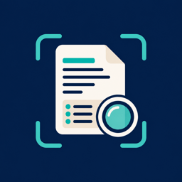

IngrediLens
Ingredient & allergen label scanner
Scan, photograph or type the ingredient list on a food or cosmetic label. IngrediLens highlights ingredients that match the allergens and preferences you choose. Your filters stay on your device.
Features
- Reads ingredient labels in English, Spanish, Portuguese, German, French and Italian, and shows them in your language when you travel
- Highlights your allergens live in the camera view
- Checks a photo of a restaurant menu for dishes that may contain your allergens
- Flags major allergens from EU and US labelling rules, with a database of more than 24,000 ingredients
- Scan history kept on your device
- Optional barcode lookup through Open Food Facts; products you found stay on your phone for offline use
New in 1.4: a travel allergy card to show restaurant staff, in 15 languages (free), a reaction diary that shows ingredients common to products you reacted to (Premium), and a sample label to try before your first scan.
IngrediLens at a glance: key facts, how matching works, what the app does not do, privacy and sources.
Learning to read labels? See our food allergy and label guides (English, Español, Português, Deutsch, Français, Italiano): hidden allergen names, “may contain” warnings, eating out and travelling with allergies. Looking up a code from a label? See the E-number food additive guide.
Free web tools: the restaurant allergy card generator (print or save a card in 15 languages) and the ingredient list allergen checker (paste a label, see your allergens and “may contain” warnings). Both run in your browser.
IngrediLens Premium
- Unlimited personal filters and custom keyword filters
- Family profiles and Kids mode with a big yes / no / check view
- Monthly plan with a 3-day free trial, or yearly plan with a 7-day free trial. Prices are shown in the app before you subscribe.
Frequently asked questions
No. It compares label text with filters you chose. Always read the physical label and talk to a qualified healthcare professional.
No. Your filters, history and label text stay on your device. IngrediLens has no ads and no tracking.
Open the paywall and tap Restore Purchases, using the same Apple Account you subscribed with.
Open the Settings app, tap your name, then Subscriptions, choose IngrediLens and tap Cancel Subscription.
Contact
Questions, bugs or ideas: enescanisler@icloud.com. We reply within two business days.